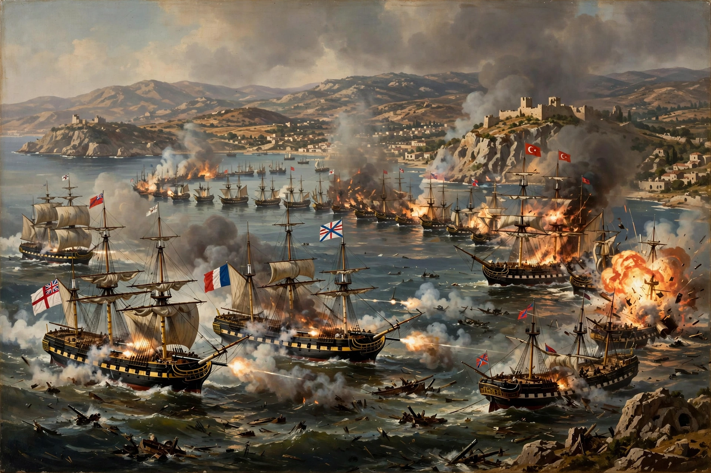

| Battle of Navarino | ||
|---|---|---|
| Part of the Greek War of Independence | ||
| Date | 20 October 1827 | |
| Location | Navarino Bay, Ionian Sea, Greece | |
| Result | Decisive Allied victory Ottoman-Egyptian fleet destroyed; path to Greek independence | |
| Belligerents | ||
| United Kingdom, France, Russia | Ottoman Empire and Egypt | |
| Commanders and leaders | ||
| Edward Codrington, Henri de Rigny, Login Geiden | Ibrahim Pasha; Amir Tahir Pasha | |
| Strength | 27 ships (10 ships of the line), c. 1,300 guns | c. 78–89 warships, c. 2,450 guns |
| Casualties and losses | 181 killed, 480 wounded; no ships lost | c. 60 ships destroyed; c. 3,000–6,000 killed |

The Battle of Navarino was a naval battle fought on 20 October 1827, during the Greek War of Independence, in Navarino Bay (modern Pylos), on the west coast of the Peloponnese. A combined British, French and Russian fleet under Admiral Sir Edward Codrington entered the bay to enforce an armistice on the Ottoman-Egyptian fleet of Ibrahim Pasha; firing broke out and in a four-hour close-range action the allied fleet destroyed almost the entire Ottoman-Egyptian force. It was the last significant battle in history fought entirely with sailing ships, and it effectively decided Greek independence.
By the Treaty of London (July 1827), Britain, France and Russia demanded an armistice and Greek autonomy under Ottoman suzerainty. Ibrahim Pasha, the Egyptian commander ravaging the Peloponnese, ignored the demand. Codrington, the allied commander-in-chief, resolved to intimidate him by bringing his fleet into Navarino Bay, where the Ottoman-Egyptian fleet lay anchored in a great crescent, and to stop its movements and supplies.
On the afternoon of 20 October the allied squadrons sailed into the bay in two columns and anchored within pistol-shot of the enemy line — a demonstration, Codrington insisted, not an attack. Shots fired at a British boat from an Ottoman fireship ignited a general action. Allied gunnery, heavier and better served, and the superior weight of the ships of the line overwhelmed numbers: by evening some sixty Ottoman and Egyptian vessels had been sunk, burned or driven ashore, with thousands of men killed. No allied ship was lost.
The British government, embarrassed by an action beyond its instructions, called it an "untoward event" in the King's Speech, and Codrington was for a time in disgrace; but the destruction of Ottoman sea power in Greek waters was irreversible. A French expedition expelled Ibrahim's army from the Morea in 1828, and the London Protocol of 1830 recognised an independent Greek kingdom.
Woodhouse, C. M., The Battle of Navarino (1965).